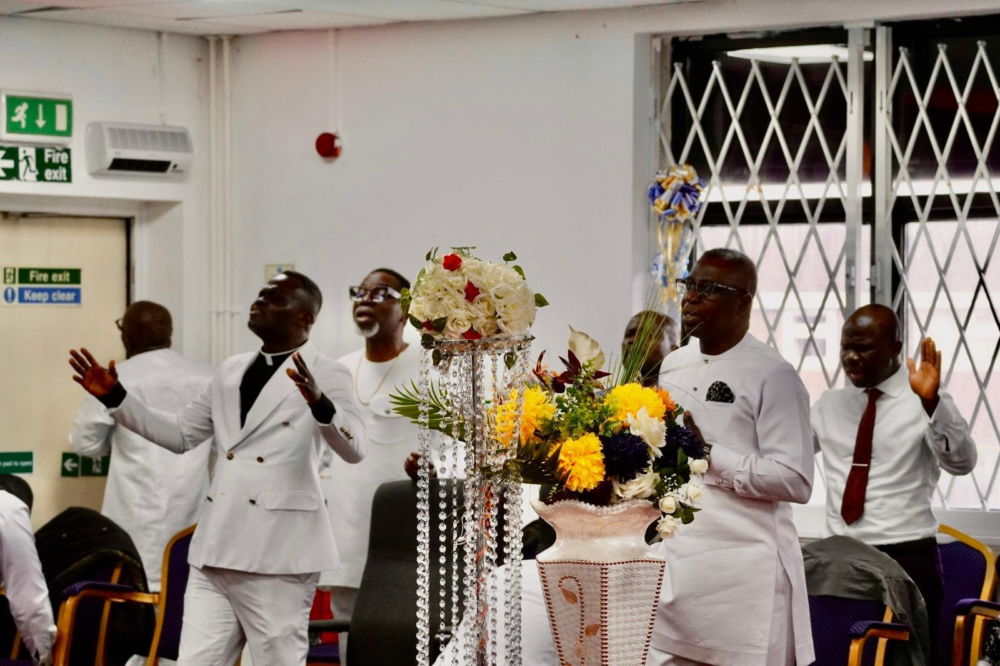

Gallery
Explore moments of worship, fellowship, and community
Our Leadership
Meet the dedicated leaders guiding our ministry
Rev. Yaw Gyamfi Dabo
Head Pastor &
General Secretary of the CACI,UK Missions
Rev. Yaw Gyamfi Dabo serves as the Head Pastor and General Secretary of the UK Missions. With a heart for God and His people, he provides spiritual leadership, encourages biblical teaching, and is committed to strengthening the Church.
Under his leadership, Christ Apostolic Church International has grown to become a beacon of hope in the community, reaching out to the lost and nurturing believers in their faith.
Church Elders

Rev Adjei Ababio
Mr. Emmanuel Amponsah
Mr. Amoah

Mr. Daniel Oteng

Mr. Joseph Amoah
Mr. Emmanuel
Photo Gallery
Click on a category below to view photos
